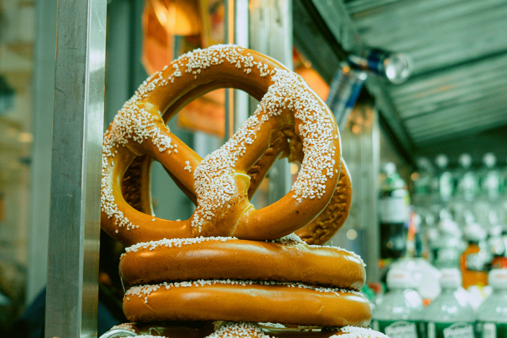

How To Make Pretzels

Recipe Description
This recipe is absolutely easy to follow and will not take too long out of your day
to make the most delicious pretzels of your life!
The preparation time is 40 minutes(except for dough rise time), cooking is only 15 minutes!
After finishing this recipe you will have 4 large pretzels.
List of Ingredients
- 1 1/5 (355mL) cups water
- 1 1/2 teaspoons dry yeast
- 1-2 teaspoons sugar or honey
- 1-2 teaspoons coarse salt
- 4.5 (650g) cups flour
- 1/4 (70g) cup food-grade sodium hydroxide (lye)
- 5 (1.2L) cups water, for the lye bath
- 2 tablespoons of crunchy finishing salt
Steps
Finally we have got all we need for our pretzels, now is time to actually cook!
Here's what you'll need to do:
- Make the dough by mixing the water, yeast, sugar, salt with as mush flour as you can stir in, then let the dough sit for 15 minutes to autolyse.
- Knead in the remaining flour, which should be enough to give you a dough that is just barely sticky.
- Cover the dough and let it rise overnight in the refrigerator for best flavor, or for ~2 hours on the counter.
- Pulll the risen dough out onto a cutting board and cut in into quarters, for the four pretzels we're making. Smash eash quarter piece down flat and roll it into a log.
- Cover the dough logs and let them rest for about 15 minutes to let the gluten relax for easier shaping. Start preheating the oven to 450℉ (230℃) while these rest.
- Roll each log out into a long thin snake, leaving the center “belly” thicker, also don’t do this with the counter covered in flour. Pull the ends of a “snake” towards you to make an upside-down ‘U’ shape, fold the “arms” over each other twice, then back towards the “belly”. Seal the tips on the belly by pressing them down firmly onto it. Don’t do the next steps too slowly to prevent the pretzels from puffing up much after being shaped.
- Using a heat-safe and chemically non-reactive vessel (such as a pyrex baking dish) create the lye bath by putting in the 5 cups of water and slowly sprinkle in the sodium hydroxide while gently mixing.
- Glove your hands with latex gloves or some other kind of chemical-resistant ones and fully submerge each of the four pretzels one at a time into the lye bath for 10 seconds each. Drain each pretzel thouroughly before transfering them to baking sheets.
- Sprinkle the crunchy finishing salt over the the pretzels and score each pretzel’s belly with a knife for aesthetics and to allow it to expand more in the oven.
- Bake pretzels until they are deep mahogany all over. This should take around 15 minutes. The sodium hydroxide should react with the dough and harmlessly evaporate in the oven.
- Store or dispose the lye bath. To easily dispose of the lye bath, slowly drizzle the lye down the drain with the faucet running, to dilute it.
- If at any point you get lye on your skin, wash it off in the sink promptly. It may cause minor skin irritation.
Enjoy!
See our other two recipes: